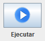
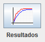

Permite ejecutar y ver los resultados de la ejecución. Además permite Guardar Resultados y Guardar/Abrir Configuracion
Para ejecutar se debe pisar sobre el botón que se muestra en la imagen:

Para ver los resultados se debe pisar sobre el botón que se muestra en la imagen:
